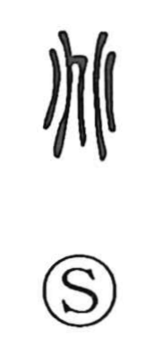

兆

Uncategorized
Kun: kizasu, kizashi | On: cho
omen ・ sign ・ trillion
Explanation
兆 began as a pictograph of crack lines produced in shell-and-bone divination. Diviners drilled a long, jujube-shaped hole (saku) lengthwise on the inner face of a tortoise plastron and a bowl-shaped hole (san) crosswise, then applied heat so the shell split. The resulting fissures ran vertically from the saku and horizontally from the san; their crossing gives the basic 卜 sign for a divinatory crack. 兆 sets two such 卜 marks facing each other, evoking the paired crack patterns that were read as omens. From this image it came to mean a sign or portent, and by extension the showing of signs or a beginning. In later usage it was also adopted as a numeral, denoting ten thousand times a hundred million—that is, one trillion.